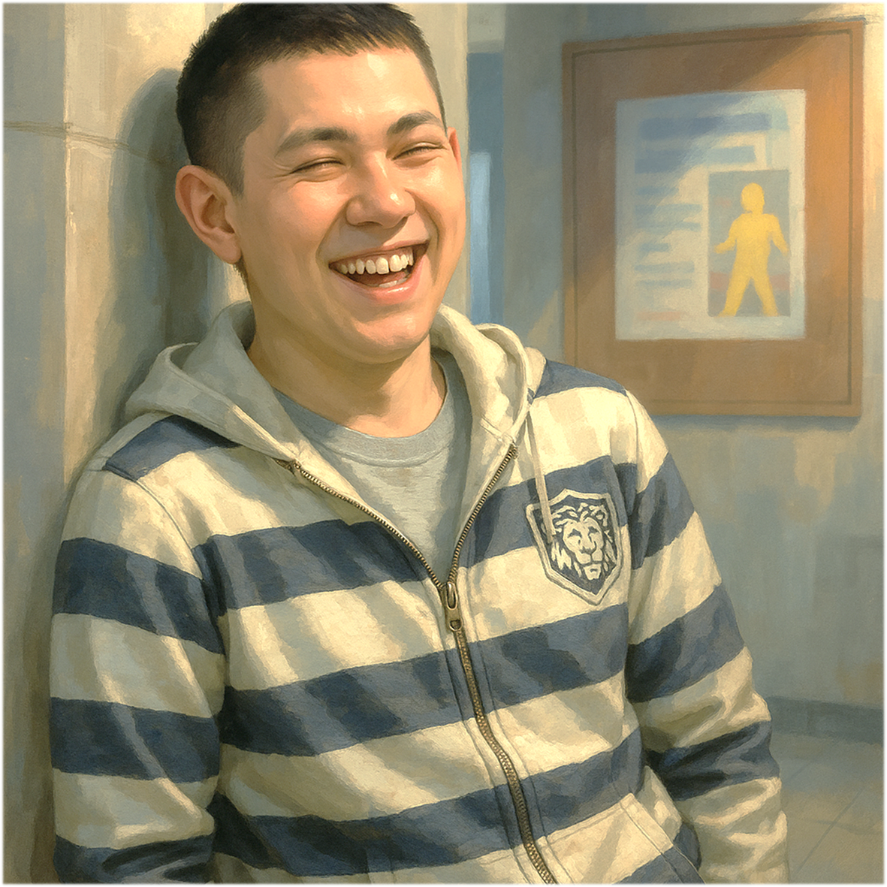

Illustration

Gender
♂️ - 男生
Goal
你麻吉通過口試時一同畢業
Ability
# 社長的麻吉 -
你麻吉即將發表垃圾論文，你出手替他發表，抽兩張牌並且分你麻吉一張。
# 糖豆人 -
使用你的兩篇已發表非垃圾論文，撤銷一位研究生的一篇垃圾論文，就好像吃彩色糖豆可以補血一樣。
## Best Paper -
你即將發表的論文被選為「最佳論文」，教授很開心要你從手牌中再發表一篇同色的論文投稿期刊。
Trivia
「社長的麻吉」徐丞丞有幾句經典口頭禪，其中使用頻率最高的非「你麻吉，社長」莫屬。
這句話表面上看起來像在幫人牽線，實際上是他努力推銷他的麻吉 — 橋牌社長給大家認識。畢竟他自己就是社長的好麻吉，所以他希望大家也能成為社長的好麻吉。
某種程度上，這是一種友情連鎖加盟制度：
你認識我 → 我是社長麻吉 → 所以你也是社長的麻吉
聽起來好像在繞口令，但徐丞丞總是說得理直氣壯。久而久之，大家也習慣了，只要聽到「你麻吉，社長」，就知道徐丞丞又開始推銷他與社長的友情了。
「糖豆人」徐丞丞的第二大口頭禪
他特別喜歡叫別人糖豆人，至於為什麼？大概是因為 — 他在找同類
至於「糖豆人」到底是什麼鬼？按徐丞丞的使用邏輯推測，大概是：
一種圓圓的、懶懶的、唐唐的，但活得很開心的生物。
所以如果有一天他叫你「糖豆人」，別急著生氣反駁，這或許是某種甜甜的肯定！
「Best Paper」徐丞丞原本只是抱著「交差了事、能畢業就好」的心情，投稿了一篇研討會論文
沒想到在 Prof. 蛋頭博士的光芒加持下，大會評審一看 — 哇，這不簡單
直接頒發最佳論文獎（Best Paper Award）
但是 Prof. 蛋頭博士認為受之有愧，因為作為 IEEE 院士，深怕被當作球員兼裁判
於是大會改成邀稿轉投期刊發表，這也導致了後續一些有趣的故事…
#SoC #Master #Year111
Relationship
紀崴 - 變體